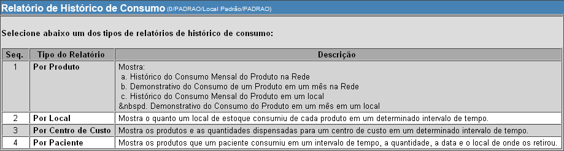
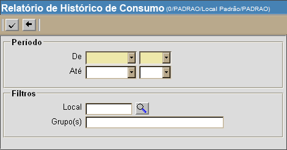

Históricos de Consumo [ Voltar ]
Produto. Este relatório exibe:
a) Histórico do Consumo Mensal do Produto na Rede; b) Demonstrativo do Consumo de um Produto em um mês na Rede; c) Histórico do Consumo Mensal do Produto em um local; e d) Demonstrativo do Consumo do Produto em um mês em um local . Local. Este relatório exibe o quanto um local de estoque consumiu de cada produto em um determinado intervalo de tempo. Centro de custo. Este relatório exibe os produtos e as quantidades dispensadas para um centro de custo em um determinado intervalo de tempo. Paciente. Este relatório exibe os produtos que um paciente consumiu em um intervalo de tempo, a quantidade, a data e o local de onde os retirou. O formulário "Históricos de consumo" encontra-se dentro do menu "Relatórios Gerenciais". Ao clicar no formulário, a seguinte tela será exibida: 
Histórico de Consumo por Produto1º Passo: clique no relatório por produto.A seguinte tela será exibida: 2º Passo: utilize os filtros existentes para configurar o relatório. O campo "Produto" é obrigatório. 3° Passo: clique no botão  para gerar o relatório. para gerar o relatório.
Histórico de Consumo por Local1º Passo: clique no relatório por produto.A seguinte tela será
exibida:

2º Passo: utilize os filtros existentes para configurar o relatório. Os campos em amarelo são obrigatórios. 3° Passo: clique no botão para gerar o relatório.
Histórico de Consumo por Centro de Custo1º Passo: clique no relatório por produto.A seguinte tela será exibida: 2º Passo: utilize os filtros existentes para configurar o relatório. Os campos em amarelo são obrigatórios. 3° Passo: clique no botão para gerar o relatório.
Histórico de Consumo por Paciente1º Passo: clique no relatório por produto.A seguinte tela será exibida: 2º Passo: utilize os filtros existentes para configurar o relatório. Os campos em amarelo são obrigatórios. 3° Passo: clique no botão para gerar o relatório.
|